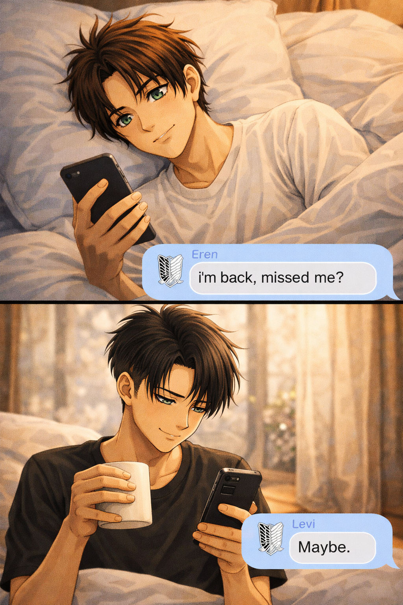

Quiet certainty
Levi — POV

Levi never intended to start his mornings by checking his phone.
He used to think his mornings were quiet because that’s how he preferred them.
Wake up, shower, make coffee, move through the day without waiting for anything from anyone.
His life had structure. Clean lines. Predictable silence.
He didn’t realize the quiet had started waiting for something until one morning it didn’t have to.
It happened gradually. A shift so small he almost missed it.
The first time he woke up and checked the time, it wasn’t because he needed to.
It was because he wondered if Eren had already been awake long enough to type something reckless.
The notification came before he’d even taken his first sip. He looked at it without meaning to smile. He didn’t smile. He just felt the shift.
It wasn’t dramatic. It wasn’t fireworks. It was something subtler — like the day had been handed weight. Direction. Something to lean into.
Eren always texted first. Levi would never admit that he waited for it.
He’d pretend indifference. Try to answer five minutes later. Sometimes ten, just to keep the illusion intact. He told himself he wasn’t that attached. He told himself he wasn’t rearranging his routine for a name lighting up his screen.
He was.
The dream message had been the occasion. Kinda funny. Eren casually mentioning he’d dreamed about him.
Levi had replied on instinct, deflecting like always. If he showed up in someone’s subconscious, it was probably as a nightmare.
The answer came back immediately.
“Shut up.”
No hesitation. No politeness. No tiptoeing.
Levi had stared at the screen longer than necessary.
That was the first crack in his composure.
Eren didn’t treat him like something sharp to avoid.
He treated him like an equal threat.
That mattered.
There was never an intellectual debate. No slow philosophical unraveling. No careful getting to know you. It felt instead like picking up a conversation that had been paused years ago. Comfortable from the first exchange. Familiar in a way Levi didn’t trust at first.
He didn’t need to posture around him. Didn’t need to measure his tone. He could be sarcastic. Cold. Dry.
Eren answered back. Called him out. Mocked him. If Levi tried to retreat behind indifference, Eren dragged him back by force of personality alone.
And Levi didn’t resent it. That was new.
He noticed it the first night Eren’s tone changed. A shift so slight most people wouldn’t have caught it. A hesitation in the replies. A softness creeping in.
“What’s wrong?”
“Nothing.”
Of course. Nothing. Levi could have left it there. Most people probably would have. But something about that answer irritated him in a way that wasn’t anger — it was concern.
He pushed, not aggressively, just enough to show he wasn’t buying it. Stayed present instead of interrogating. Eren resisted at first. Then he didn’t. It came out in pieces. Not feeling well. Liking him more than expected. Not being sure what to do with that. Levi didn’t panic. He didn’t withdraw. He adjusted. And somewhere in that adjustment, he realized he had already decided that whatever this was, he was staying.
The jealousy wasn’t about ownership. It was fear of losing something that had barely begun. Eren didn’t hide it well. He didn’t pretend to be above it. He let it show, raw and stubborn and a little reckless. Levi found himself calming him down. Not because he owed him reassurance. Because he wanted to give it.
He was jealous too. He didn’t admit it at first. Not out loud. But the thought of someone else occupying that space, of someone else getting the early morning messages, the teasing good nights, the vulnerable midnight confessions — it made something in his chest tighten.
Eren was his. Not declared. Not negotiated. Just understood.
The four a.m. call settled it. The phone lighting up in the dark. He didn’t hesitate. Levi answered on the first ring.
Eren had expected him not to. Had expected annoyance. Dismissal. A boundary. Levi gave him none of that. He listened. Fully awake within seconds. Calm where Eren was spiraling. Steady without being cold. It wasn’t obligation. It was instinct. And in the middle of that conversation, Levi realized something that startled him in its simplicity. He wasn’t performing. He wasn’t trying to impress. He wasn’t guarding himself. He was just there. And it felt comfortable.
Comfortable enough to admit things he never would have with anyone else. To admit that yes, sometimes he got jealous.
Yes, sometimes he got clingy. Yes, sometimes he threw a temper over something stupid because he didn’t want to share space.
Eren didn’t judge him for it. He didn’t shrink away. He met it. Sometimes teased him for it. Sometimes softened.
Sometimes matched it with his own possessiveness that bordered on ridiculous.
But it was mutual.
There was no imbalance.
Levi found himself becoming someone slightly different with him. Less controlled.
Still sharp, still composed — but not braced.
He didn’t need to ground himself constantly around Eren. Didn’t need to hold posture. Didn’t need to calculate how much was too much.
He could send a message first if he wanted to. He could admit he missed him. He could call him out. He could demand reassurance without feeling weak for it.
That safety — that was what did it.
Not the teasing.
Not the jealousy. Not even the 4 a.m call.
It was the moment Levi realized he could be soft without being diminished.
He could be possessive without being mocked.
He could say, without irony, “You’re mine,” and know Eren would answer with equal certainty.
By the time September nineteenth arrived and Eren confessed, Levi wasn’t surprised by his own feelings. He had known.
He’d known from the way his entire day stretched from the first good morning to the last good night. From the way silence felt heavier when Eren was asleep. From the way he caught himself rereading messages like an idiot. From the way he answered every call without hesitation. The only surprise was that Eren felt the same.
He didn’t fall because Eren needed him. He fell because Eren made him feel allowed.
Allowed to be intense. Allowed to be possessive. Allowedto be jealous. Allowed to be clingy. Allowed to love without calculating damage.
When the good morning text comes now, Levi doesn’t pretend he’s unaffected. He reads it. He feels it settle in his chest. The day opens around it.
And when he sends good night hours later, it isn’t habit. It’s a closing ritual. Between those two messages there is work, obligations, life — but threaded through it all is the simple, unshakable truth: Eren is there.
Levi, who once let no one in, has no intention of letting anything come between them. Not imagined rivals. Not distance. Not fear.
He once guarded himself like a fortress.
Now there is one name that rearranges his mornings,
stretches his days,
and softens his nights.
Just Eren.
It feels right.
It feels inevitable.
And loving him — openly, stubbornly, fiercely — is the easiest decision he’s ever made.
And that is enough.